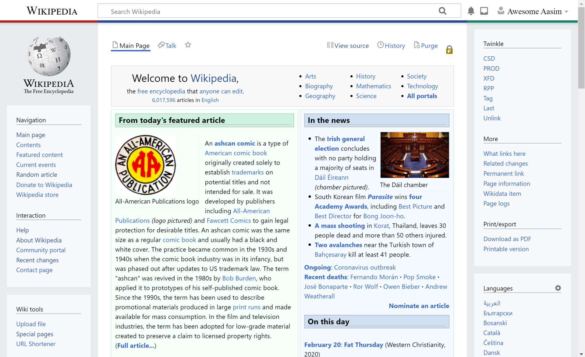
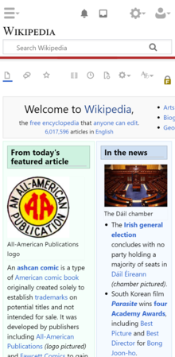

Nesta página vamos falar sobre assuntos relacionados à Internet, tais como Internet das coisas, Web design responsivo e experiência do usuário.
Internet das coisas (em inglês: Internet of Things, IoT, sendo em português e espanhol IdC o acrónimo equivalente) é um conceito que se refere à interconexão digital de objetos cotidianos com a internet, conexão dos objetos mais do que das pessoas.
Em outras palavras, a internet das coisas nada mais é que uma rede de objetos físicos (veículos, prédios e outros dotados de tecnologia embarcada, sensores e conexão com a rede) capaz de reunir e de transmitir dados. É uma extensão da internet atual que possibilita que objetos do dia-a-dia, quaisquer que sejam mas que tenham capacidade computacional e de comunicação, se conectem à Internet. A conexão com a rede mundial de computadores possibilita, em primeiro lugar, controlar remotamente os objetos e, em segundo lugar, que os próprios objetos sejam usados como provedores de serviços. Essas novas capacidades dos objetos comuns abrem caminho a inúmeras possibilidades, tanto no âmbito acadêmico quanto no industrial. Todavia, tais possibilidades acarretam riscos e implicam grandes desafios técnicos e sociais.
Se os objetos do cotidiano tivessem incorporadas etiquetas RFID ("etiquetas inteligentes"), poderiam ser identificados e controlados por outros equipamentos e não por seres humanos. Se, por exemplo, certos objetos entre outras coisas como livros, termostatos, refrigeradores, lâmpadas, remédios, autopeças, fossem equipados com dispositivos de identificação e conectados à Internet, não haveria a possibilidade de faltarem produtos como alguns remédios, pois saberíamos exatamente onde os encontrar e quantos estariam disponíveis. A ocasional falta deles passaria a ser coisa do passado. Saberíamos também, a qualquer momento, qual é a lâmpada que acende e qual é a que está fundida.
Web design responsivo (WDR) é uma abordagem ao design da Web que faz as páginas da web renderizarem bem em uma variedade de dispositivos e tamanhos de janela ou tela do mínimo ao máximo. Trabalhos recentes também consideram a proximidade do visualizador como parte do contexto de visualização como uma extensão para WDR. Conteúdo, design e desempenho são necessários em todos os dispositivos para garantir usabilidade e satisfação.
Um site projetado com WDR adapta o layout ao ambiente de visualização usando grades fluidas e baseadas em proporção, imagens flexíveis, e as media queries CSS3, uma extensão da @media, das seguintes formas:
O web design responsivo tornou-se mais importante à medida que a quantidade de usuários de dispositivos móveis passou a representar mais da metade do tráfego total da Internet. Em 2015, por exemplo, o Google anunciou o Mobilegeddon e começou a aumentar as avaliações de sites compatíveis com mobile se a busca fosse feita em um dispositivo móvel. O web design responsivo é um exemplo de plasticidade da interface do usuário. Veja um exemplo de 
Uma captura de tela da Wikipédia com um skin responsivo (Timeless).
A mesma skin (Timeless) no celular; observe como os elementos se reorganizam para serem mais amigáveis aos dispositivos móveis.
Experiência do usuário (EU), do inglês user experience (UX), é o conjunto de elementos e fatores relativos à interação do usuário com um determinado produto, sistema ou serviço cujo resultado gera uma percepção positiva ou negativa. O termo foi utilizado pela primeira vez por Donald Norman na década de 1990. Segundo Norman, UX envolve não somente aspectos relacionados ao design (hardware, software, interface, usabilidade, facilidade de busca etc), mas também destaca os aspectos afetivos e experienciais, significativos e valiosos de interação humano-computador e propriedade do produto. A experiência do usuário é de natureza subjetiva, pois é sobre a percepção e pensamento individual no que diz respeito ao sistema. Ela é também dinâmica, pois é constantemente modificada ao longo do tempo, devido à evolução das circunstâncias e inovações.
Um conceito importante no design UX é o processo pelo qual os usuários formam experiências. Quando o usuário encontra um produto, forma uma impressão momentânea, que evolui ao longo do tempo. Neste processo, a percepção, ação, motivação e cognição do usuário se integram para formar uma história memorável e coerente: chamada "experiência do usuário". Esse processo suscita respostas emocionais, que determinam em grande parte se a experiência será considerada positiva ou negativa.
Designers UX
Os designers que estão cientes do processo de formação de experiência, procuram criar e moldar os fatores que influenciam o processo deliberadamente. Para fazer isso, um designer UX considerará o uso de certas questões a serem feitas como "Por que?", "O que" e "Como" . O porquê envolve as motivações dos usuários para adotar um produto, seja se relacionando com uma tarefa ou que desejam realizar com ele, seja com valores e pontos de vista associados à propriedade e uso do produto. O que aborda as coisas que as pessoas podem fazer com o produto, a sua funcionalidade. O como, relaciona-se ao design da funcionalidade de uma maneira acessível e esteticamente agradável. O projeto UX começa a partir do Porquê, então determina O Que e, finalmente, Como o modo de criar os produtos com os quais os usuários podem formar experiências significativas.